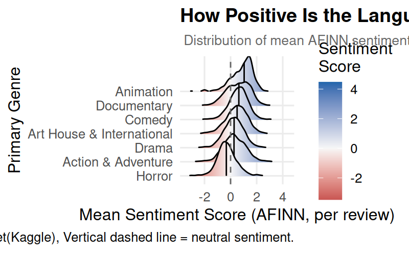
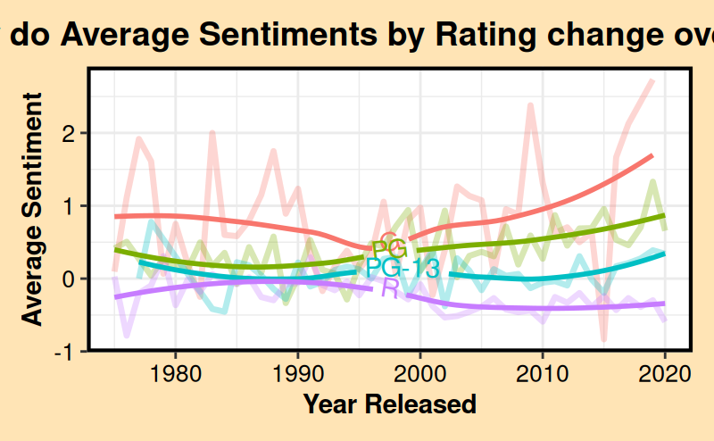

# Data Viz - Zoe's Work
ggplot(rt_sentiment, aes(x = mean_sentiment, y = primary_genre, fill = after_stat(x))) +
geom_density_ridges_gradient(
scale = 2.5,
rel_min_height = 0.01,
quantile_lines = TRUE,
quantiles = 2
) +
scale_fill_gradient2(
low = "#b2182b",
mid = "#f7f7f7",
high = "#2166ac",
midpoint = 0,
name = "Sentiment\nScore"
) +
geom_vline(xintercept = 0, linetype = "dashed", color = "gray40", linewidth = 0.5) +
labs(
title = "How Positive Is the Language Critics Use by Genre?",
subtitle = " Distribution of mean AFINN sentiment scores in Rotten Tomatoes critic reviews",
x = "Mean Sentiment Score (AFINN, per review)",
y = "Primary Genre",
caption = "Source: Rotten Tomatoes dataset(Kaggle), Vertical dashed line = neutral sentiment."
) +
theme_minimal(base_size = 12) +
theme(
plot.title = element_text(face = "bold", size = 14),
plot.subtitle = element_text(color = "gray40", size = 10),
legend.position = "right",
panel.grid.minor = element_blank()
)The Hidden Sentiment of Movie Critic Reviews
Introduction
Have you ever wondered if movie critics feel the same way audiences do walking out of a film? The language critics use tells a story beyond a simple “fresh” or “rotten” verdict. In this blog post, we dig into thousands of movie reviews to uncover patterns in critic sentiment – asking not just what critics say, but how their language shifts depending on the genre they’re reviewing and the era they’re writing in. We explore whether Horror brings out harsher words than Animation, whether Drama critics are more divided than Comedy critics, and whether the overall positivity of reviews has shifted across the past four decades.
Background
We drew on the Rotten Tomatoes Movies and Critics Reviews dataset from Kaggle, which contains two files: one with movie-level information and one with individual critic reviews. We joined these together using rotten_tomatoes_link as a common key so that each review inherited its movie’s genre information. We used a regular expression to extract the primary genre from each movie’s genre list – for example, pulling “Drama” from “Drama, Romance, Comedy” – and filtered down to the 7 most common genres for clarity. After applying tokenization, sentiment analysis, and TF-IDF filtering, we were able to discover patterns between critic language, movie genre, and content rating.
Data Visualization 1: How Positive Is the Language Critics Use by Genre?

Interpretation
I was trying to answer the question of what does critic language look like across genres? The ridge plot above reveals some striking differences in how critics write about different genres. Animation stands out as the most positively reviewed genre, with its distribution skewed noticeably to the right – critics consistently use warmer, more enthusiastic language when reviewing animated films. Horror sits at the opposite end, with the most negative median sentiment of all seven genres, suggesting critics reach for darker, more critical vocabulary when writing about scary films. Drama shows the widest and flattest distribution of any genre, meaning critic sentiment is more variable for dramatic films than any other – some reviews are glowingly positive while others are sharply negative, reflecting how divisive the genre can be. Notably, almost every genre has its median sentiment sitting just to the right of zero, suggesting that despite these differences, critics across the board tend to lean slightly positive in their language regardless of what they are watching.
Data Visualization 2: How do Average Sentiments by Rating change over Time?
# Data Viz - Owen's Work
ggplot(final_dataset, aes(x = year, y = avg_sentiment, color = rating)) +
geom_line(linewidth = 1.2, alpha = 0.3) +
geom_textsmooth(
aes(label = rating),
text_smoothing = 30,
method = "loess",
formula = y ~ x,
se = FALSE,
size = 4,
linewidth = 1
) +
theme_bw() +
labs(
title = "How do Average Sentiments by Rating change over Time?",
x = "Year Released",
y = "Average Sentiment"
) +
# Decorative theme elements (with help of ChatGPT)
theme(
plot.background = element_rect(fill = "moccasin", color = NA),
panel.border = element_rect(color = "black", linewidth = 1.5),
plot.title = element_text(
face = "bold",
size = 14,
hjust = 0.5
),
axis.title = element_text(face = "bold"),
axis.text = element_text(
color = "black",
size = 10
),
plot.margin = margin(9,9,9,9),
legend.position = "none",
strip.text = element_text(face = "bold")
)
Interpretation
This layered graphic provides insight on the shifts in average yearly sentiment on movies of each of four common content ratings (G, PG, PG-13, and R). The smoothed best fit lines appear to outline clear differences in overall sentiment between ratings, but we should first turn our attention to the faded line charts. For each rating, the average sentiment from all movies released at that year was plotted. So, it makes logical sense to find most of these points falling close to 0, as a mountain of data averaged along a particular metric will blur our sight of extreme cases. However, the line graphs still show a significant level of spontaneity between years, with some movie ratings receiving more drastic shifts in overall sentiment than others. G-rated movies appear to be the most random, potentially because it is historically the newest content rating of the four, and critics may have mixed reactions toward movies that seem to be out of their comfort zone. On the other hand, the longstanding movie ratings PG, PG-13, and R received quite similar sizes of jumps throughout their 1980-2020 lifetime. However, for the PG-rated movies, those shifts ended up trending slightly higher from 2010 to 2020. Since the PG-13 and R-rated movies experienced similar magnitudes of change in average yearly sentiment, but did not get this positive increase, we can mark this period as a reliable indicator of increased popularity for PG movies among critics.
Referring back to the solid smoothed lines, we may find it easy to assume that G-rated movies are clearly most popular, followed by PG, PG-13, and R. However, with this unreliable conclusion arises a concealed limitation to the tokenization of this data. Many G or PG-rated films will use words that carry positive sentiment according to our sentiment analysis, but not reveal anything about the critic’s thoughts of the movie, like “family-friendly” or “safe”. For R-rated movies, critics may use the words “horrifying”, “dark”, “intense”, or “thrilling” to demonstrate praise, but will be analyzed with a negative value. As such, the clear distinction between these best-fit lines are likely too good to be true.
What this limitation does not explain though are the shifts between years as shown by the line plots. Therefore, we can confidently conclude that critics exhibit more mixed reactions toward G-rated movies, while the others are more consistent, and since 2010, PG-rated movies have grown increasingly popular among critics.
Conclusion
Critics clearly use different voices when voicing their takes on movies, and it shows in the words within their reviews. Thus, it is easy to find patterns between movie genres and content ratings when we run a quantitive sentiment analysis on Rotten Tomatoes data. It is clear that critics display more enthusiasm when a movie tailors to a younger audience, for the Animation genre received high positive sentiment and G and PG-rated movies experienced the most variance in average sentiment. On the other hand, critics must be showing a more mature demeanor in the face of horror movies and R-rated movies, as their sentiment value plummets. So overall, our primary conclusion may very well be that the data reflects more about the art of movie review-writing rather than the critics’ personal opinion on genres.
But there is a little more to the picture. We did come across some clear indicators of the average critic’s thoughts as they walk into the cinema. For example, the ridges plot revealed how nearly every movie genre features positive average sentiments. This surely cannot be singly explained by the audience a critic must review for, or what genre of movie they are watching, but instead by their genuine interest in giving positive feedback. As such, we could reasonably assume the same mindset is carried for horror movies and R-rated movies too. Furthermore, the variances of average sentiments between each rating show how well certain movies can expose the humanity of critics’ reactions. For example, with an R-rated movie, a critic may be ready to deliver a well-rehearsed review that addresses tropes they have seen before. But for G-rated movies, they may be unsure whether this will be a poorly made production they are “too old” to enjoy, or if it harbors a truly heartwarming family-friendly story.
In conclusion, we all react to movies differently, and some of our overall emotions toward it may be driven by what we assume of the genre or the rating. But critic reviews follow more nuanced patterns, as they are influenced by the audience they must speak for, as well as the critic’s prior movie-watching experience. However, the data show that even professional movie reviews give way to a critics genuine reaction to what they just watched. On average, they share kudos toward this innovative culture of entertainment, no matter the genre, no matter the content rating. With that, we can breathe a sigh of relief, as we have confirmed that the critics that affect the movie industry are indeed human.